십이지장 악성 질환
십이지장 선암과 그 전구병변, 유두부(AoV) 선종·암, 신경내분비종양, 림프종, 전이암, 그리고 악성 병변 치료에 따른 천공까지. 십이지장은 상부위장관 내시경의 관찰 경계에 놓여 있어 진단도 치료도 늘 어렵다. "무엇을 볼 것인가"와 "무엇을 하지 말아야 하는가"를 함께 정리한다.
1. 소장암 개요와 십이지장
소장(small bowel)은 약 5~6 m로 소화관 전체 길이의 75%, 흡수면적의 90% 이상을 차지하지만, 소장 종양은 전체 소화관 종양의 1~5%에 불과하고 발생률은 10만 명당 1예 이하이다. 소장에 종양이 적은 이유로는 묽고 유동적인 내용물, 빠른 통과시간, 낮은 세균 부하, 해독효소(benzpyrene hydroxylase) 농도, 풍부한 림프조직과 IgA, 알칼리성 pH, 점막의 빠른 회전 등이 거론된다.
위치별로 보면 십이지장에는 선암(adenocarcinoma)이 많고, 회장에는 유암종(carcinoid)이 많으며, 림프종은 고루 분포한다. 즉 십이지장은 소장 악성 종양, 특히 선암의 주요 무대이다. 그런데 상부위장관 내시경의 통상 도달 범위는 십이지장 제2부까지이고, 제3·4부는 push enteroscopy(소아 대장경)나 측시경이 필요하다.
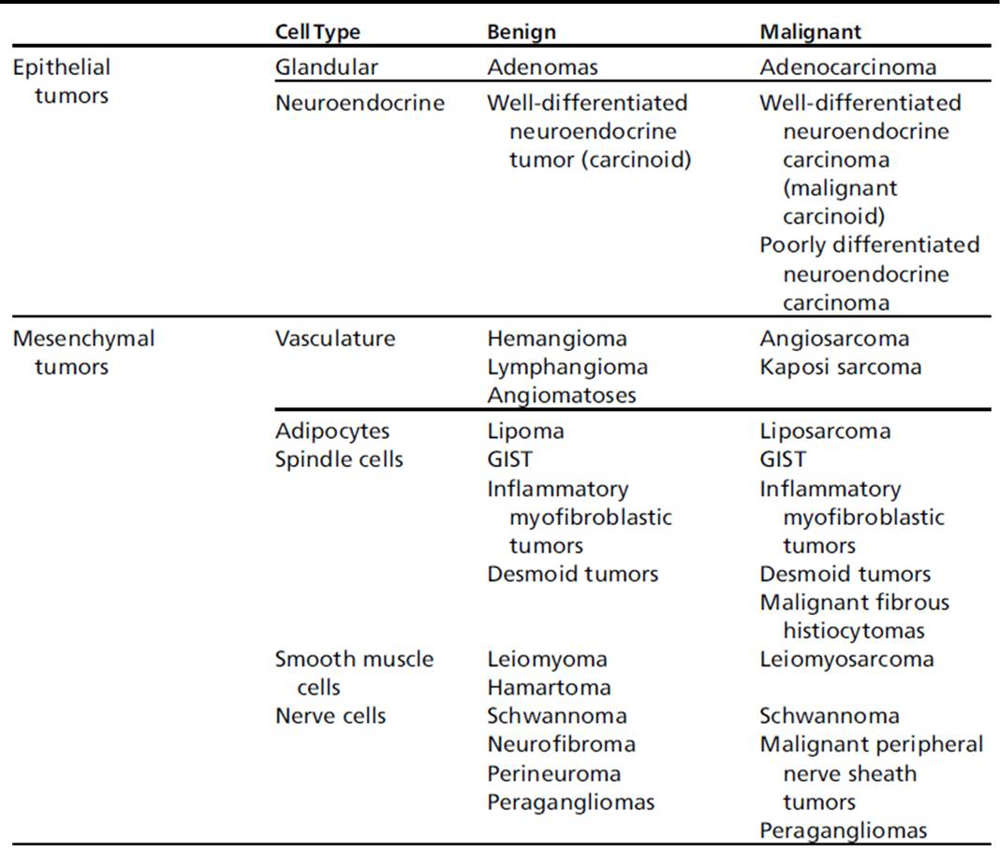
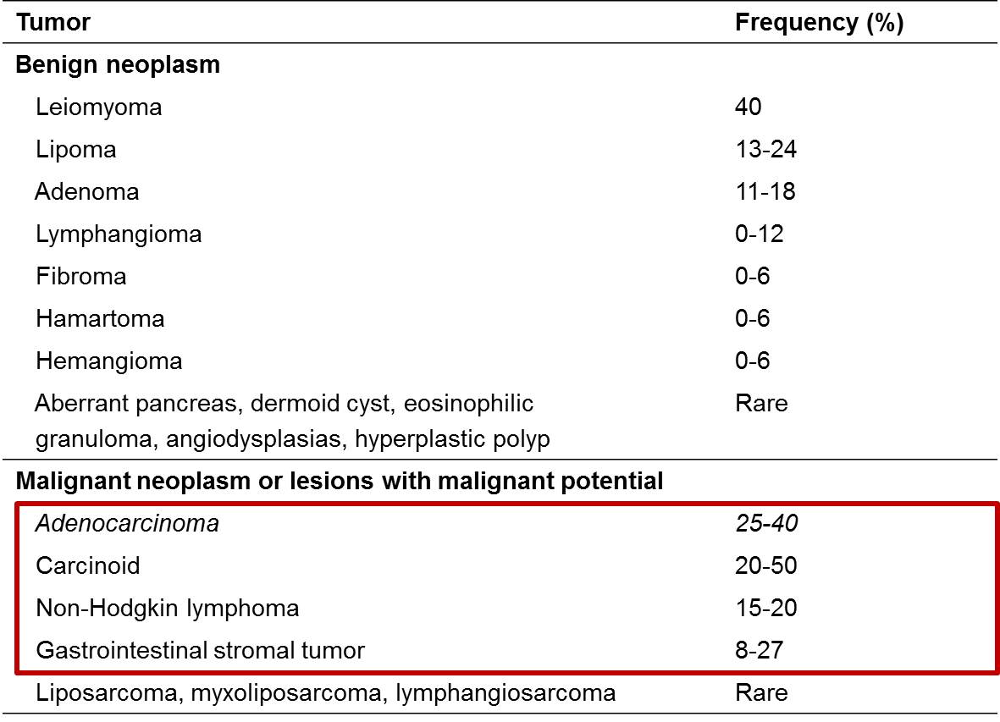
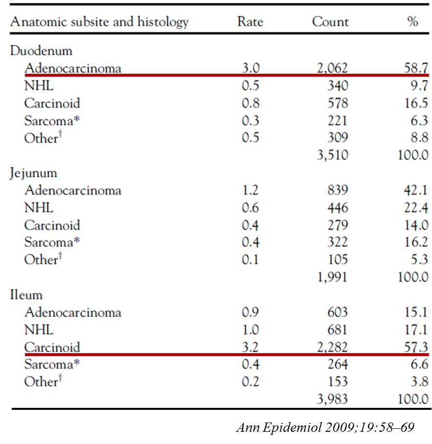
- 상부위장관 내시경은 위암 조기진단이 목적이고, 십이지장 관찰은 상대적으로 소홀해지기 쉽다.
- 제3·4부 병변은 내시경 도달 자체가 어려워 놓친다. 2005년 대한소화기내시경학회가 "첫 상부위장관 내시경 검사에서 진단되지 못한 원발성 악성 십이지장 종양"을 주제로 다룬 바 있다.
- 2025년 국내 big data 연구가 발표되었고(J Gastroenterol Hepatol 2025), 국내 역학의 근거가 축적되고 있다.
- 조직형·병기·위치에 따라 내시경 절제(EMR/ESD), 수술(wedge resection/PD), 항암을 조합한다.
- 전이성·절제불가 선암 →
FOLFOX또는gemcitabine+cisplatin기반 전신항암.
2. 십이지장 선암 (Duodenal adenocarcinoma)
십이지장 선암은 소장 선암의 대부분을 차지하며, 유두 주위(periampullary)에 호발한다. 검진 내시경에서 우연히 발견되는 경우부터 복통·구토·체중감소·폐쇄로 발현하는 진행암까지 스펙트럼이 넓다. 조직형은 중등도 분화(M/D) 선암이 흔하고, 점액암(mucinous), 인환세포암(signet ring cell), 유두상 선암 등이 있다.
내시경 소견
- 구부~D2에 융기·궤양·융합성 종괴, 때로는 lumen을 encircling하는 협착.
- 궤양성 병변은 주변 부종이 너무 심하거나 약물에도 증상이 지속되면 악성을 의심한다(단순 양성 궤양과의 감별점).
- 제2~3부 각도 직후 협착은 소아 대장경·cap·측시경으로 접근하고, 진입 불가 시 forcep으로 조직을 얻는다.
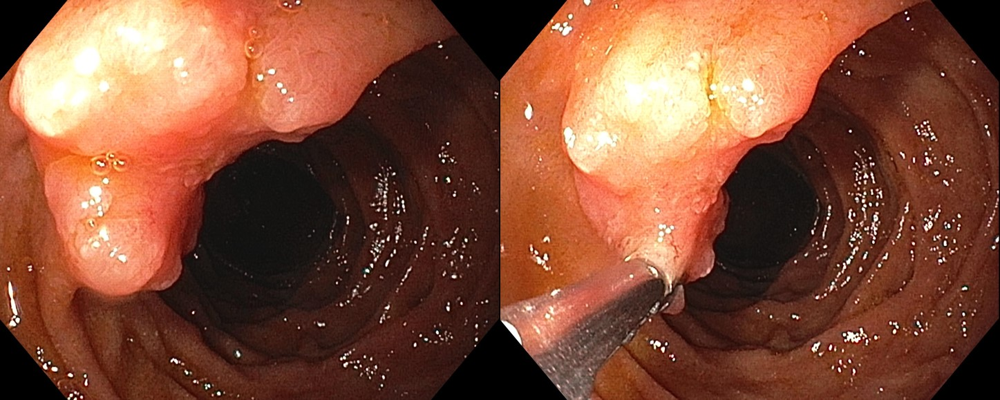
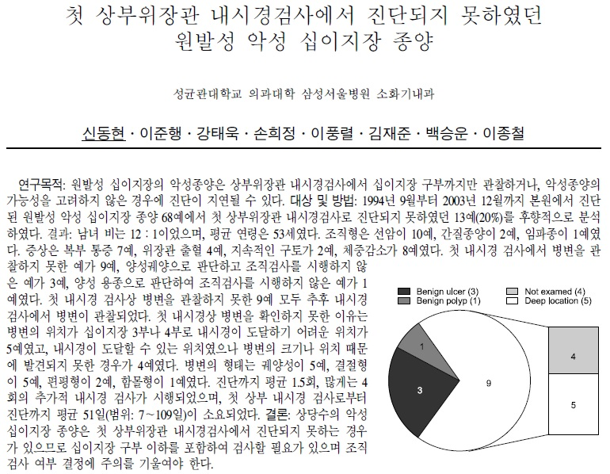
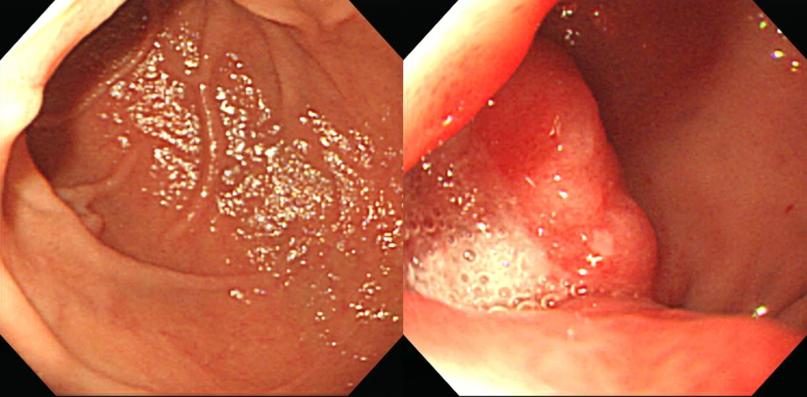
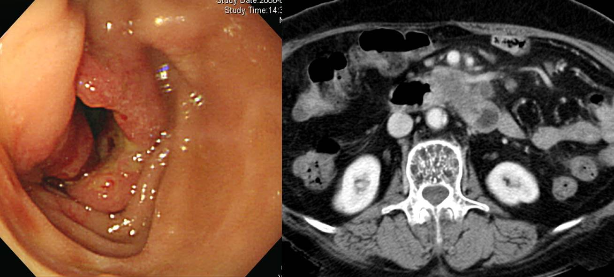
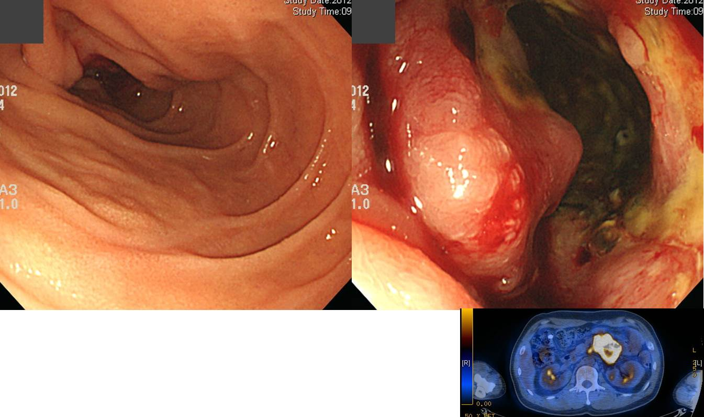
- D3·D4 병변은 EGD로 도달이 어려워 pet CT에서 hypermetabolic mass 내부에 air가 보이면 GI tract 병변을 의심한다.
- 십이지장 궤양으로 의뢰된 환자에서 궤양저에 비해 점막 부종이 과도하면 암을 배제하기 위해 조직검사를 시행한다.
- 위암·유방암 등 타장기암 환자에서 십이지장 병변을 보면 원발성과 전이암 감별이 필요하다(§7).
- 국소 절제가능 periampullary 선암 → 췌십이지장절제(PPPD/Whipple). 표재성·소형은 부분절제/내시경 절제도 가능.
- 림프절 전이 동반 시 adjuvant chemotherapy:
gemcitabine+cisplatin또는FOLFOX. - 폐쇄 동반 시 스텐트 삽입(duodenal stent) 또는 우회술, 황달 시 ERBD/PTBD로 감압.
- 수술 후 추적: 내시경 재검(PPPD 후 anatomy 확인)과 영상 검사.
3. 십이지장 전구병변과 조기암 (Adenoma → Carcinoma)
십이지장 선암의 상당수는 선종(adenoma)을 거쳐 발생한다. 즉 선종·저도~고도 이형성 → 조기암의 경로가 있고, 점막에 국한된 조기암은 내시경 절제로 완치가 가능하다. FAP에서는 ampullary·duodenal adenoma가 다발성·재발성으로 생기며, 함몰형 조기 십이지장암도 보고된다.
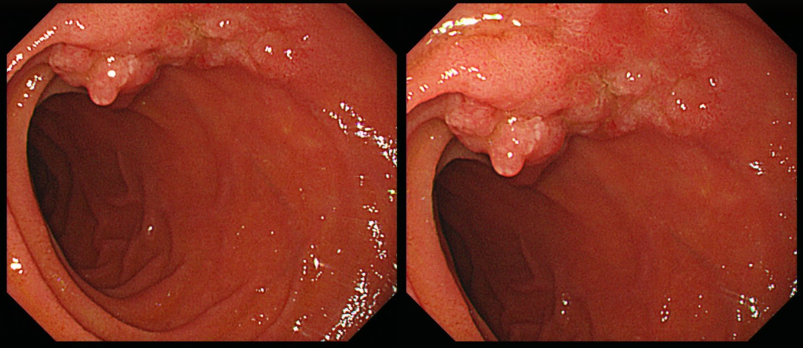
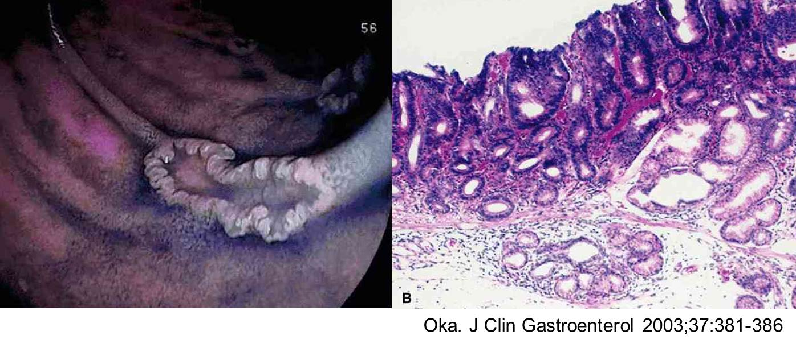
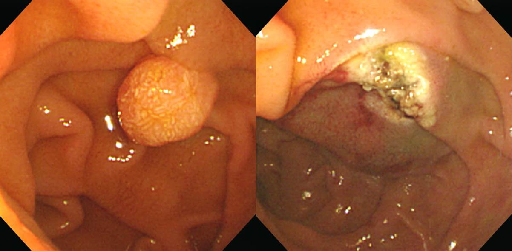
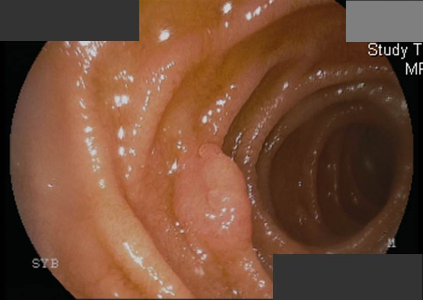
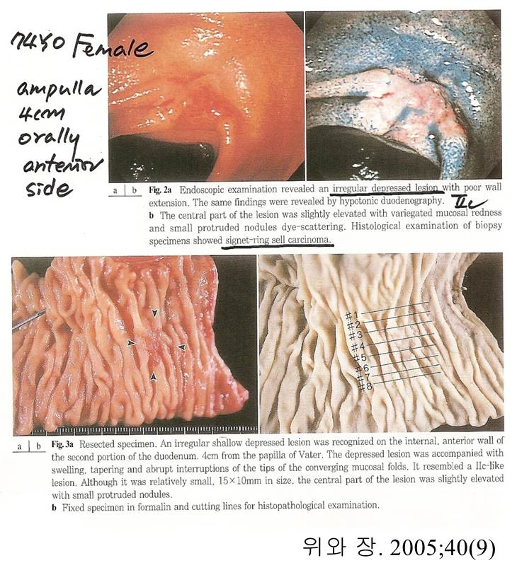
- 십이지장은 벽이 얇고 접근이 어려워 내시경 절제 후 천공·출혈이 10~20% 발생한다(퇴원 후 문제는 약 300명에 1명).
- Endoscopy 2015 editorial은 십이지장 선종에서 ESD를 일상적으로 하지 말 것("should not be done routinely")을 강조한다.
- Non-lifting이면 절제를 포기하고 소작술로 전환한다(조직검사·주입이 점막하 섬유화를 유발).
- 절제:
EMR (inject & cut, EMR-P)가 표준, 큰 병변은UEMR·ESD선택(위험 높음), 소작APC. - 시술 전후
PPI, 필요 시clip로 천공·출혈 대비. - FAP: 정기 duodenoscopy 감시(Spigelman) + 단계적 절제, 진행 시 PD.
4. 유두부 선종과 암 (Ampullary adenoma & adenocarcinoma, AoV)
유두부(Ampulla of Vater)는 D2의 핵심 랜드마크이지만 정면상 관찰이 어렵고 사람마다 모양이 다양하다. 빈혈·황달·복통 등 증상이 있을 때는 면밀히 관찰해야 하지만, 무증상 검진에서는 "가능하면 보되 무리하지는 않는다"가 원칙이다. 유두부 선종은 선암의 전구병변으로, 유두부 암은 예후가 비교적 불량하다.
내시경 소견과 접근법
- 정상 유두부, 부유두(minor papilla)를 주유두와 구분한다. 직시경으로 애매하면 측시경(duodenoscope)으로 바꾼다.
- 직시경 끝에 cap을 장착하면 유두부 관찰이 개선된다(Abdelhafez M. Am J Gastroenterol 2017). 모든 환자에게 필요하지는 않다.
- 유두부 근처 조직검사는 췌장염을 유발할 수 있어 주의한다.
- 선종은 융기·과립상 병변으로, FAP에서는 주유두·부유두에 다발성으로 생긴다.
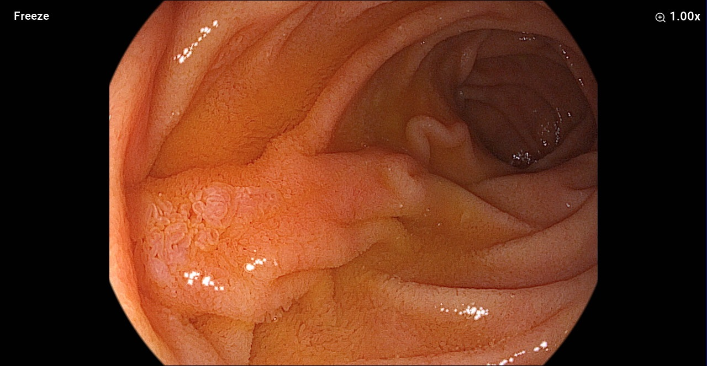
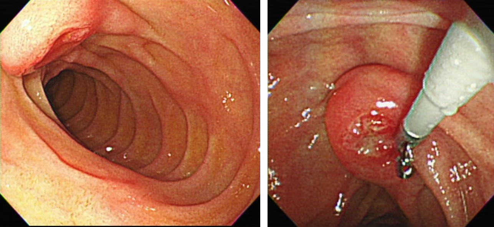
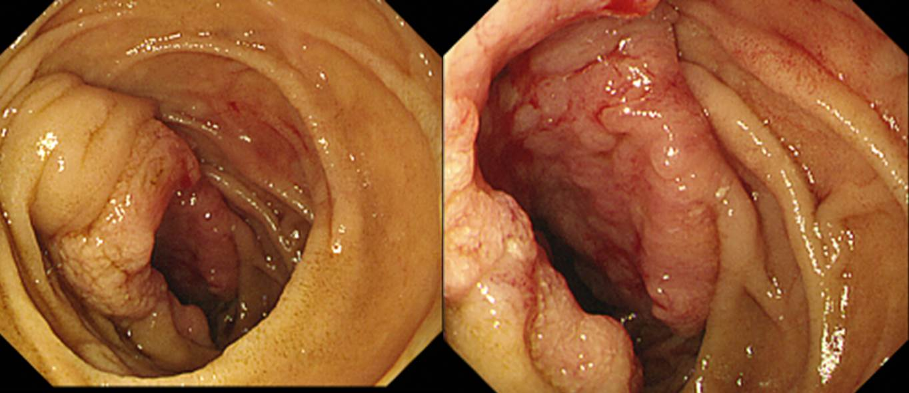
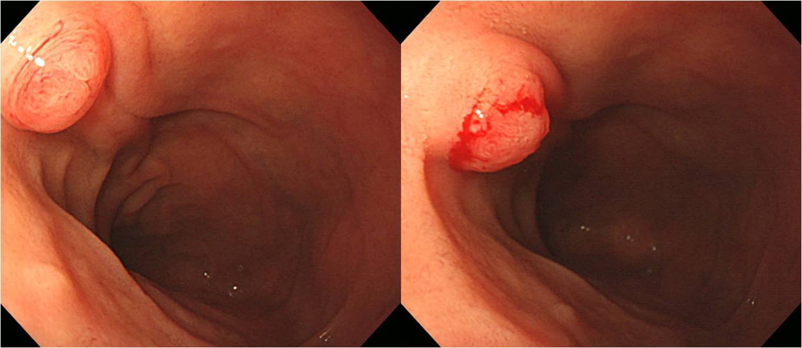
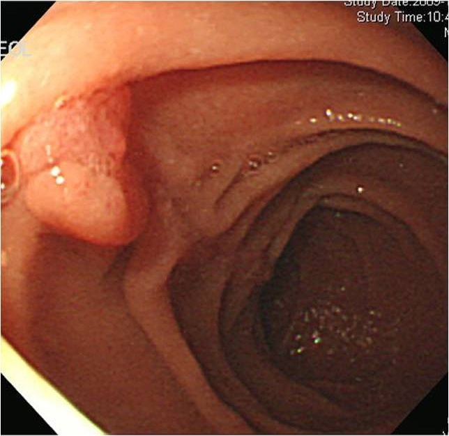
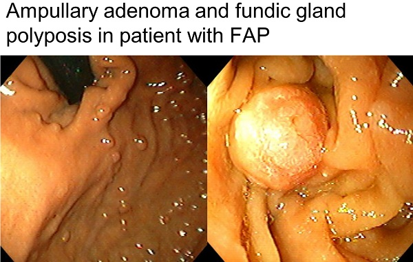
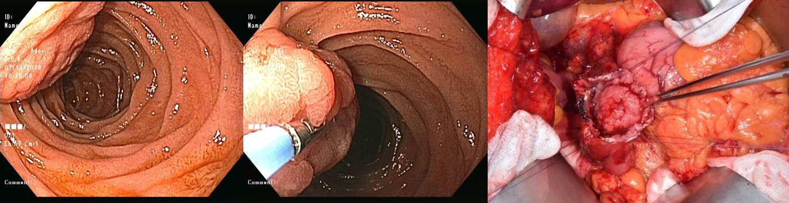
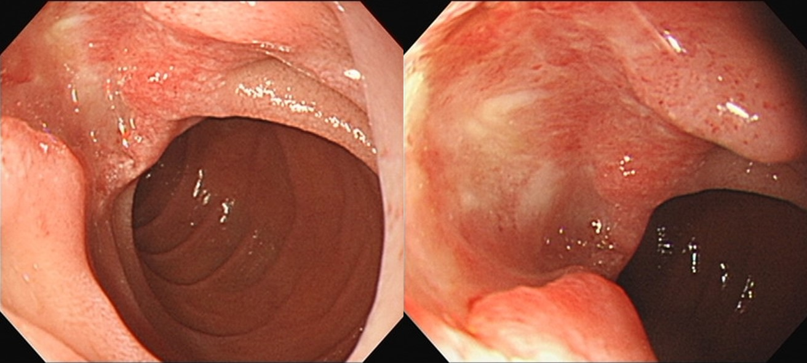
- 유두부는 검진의 대상 부위가 아니다. 애매한 병변의 조직검사로 의미 있는 병이 발견되는 경우는 많지 않고, 오히려 치료 합병증이 크다.
- 선종이라도 조직검사에서 high grade dysplasia·암 의심이면 endoscopic papillectomy 또는 수술을 검토한다.
- Non-lifting이면 papillectomy를 포기하고 PPPD를 고려한다.
- AoV 옆 게실은 직시경에서 놓치기 쉽다 — ERCP/papillectomy 시 확인된다.
- 유두부 선종 → endoscopic papillectomy 또는 transduodenal ampullectomy. 시술 후
PPI, 췌장염 예방(필요 시 pancreatic stent). - 유두부 암 → PPPD. 림프절 전이 시 adjuvant chemo
gemcitabine+cisplatin. - 황달 → ERBD/PTBD 감압 후 수술. 전이성/절제불가 →
FOLFOX등 전신항암.
5. 십이지장 신경내분비종양 (NET / Carcinoid)
십이지장 유암종(carcinoid)은 신경내분비종양(NET)이며, 자연사가 잘 알려지지 않아 장기간 변화가 없는 환자도 있고 불충분한 절제 후 재발·전이를 보이는 경우도 있다. G1은 내시경 절제가 표준치료이지만 천공 위험이 매우 높고 절제변연 양성 가능성도 있다. 경과관찰·ablation·EMR·ESD·수술을 환자별로 개별화한다.
내시경 소견
- 구부~D2의 작은(수 mm~1 cm) 무경성·점막하 융기, 황색조, 중심함몰 동반 가능.
- duodenal bulb는 일부 증례에서 retroflection이 가능하다(구부 지름·bending portion 길이에 따라 다름).
- 크기·깊이·분화도가 치료 방향을 결정한다.
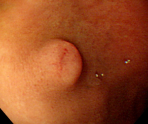
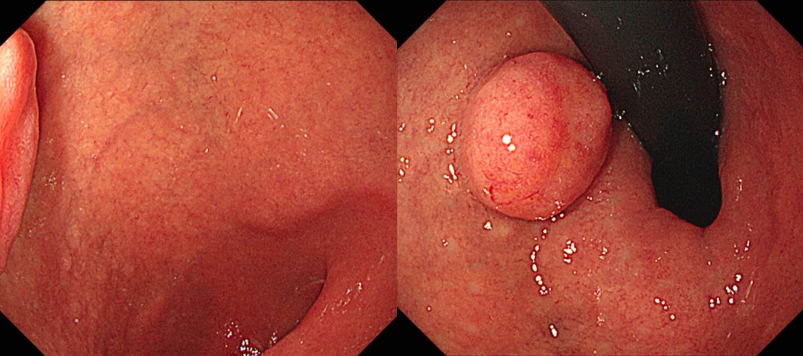
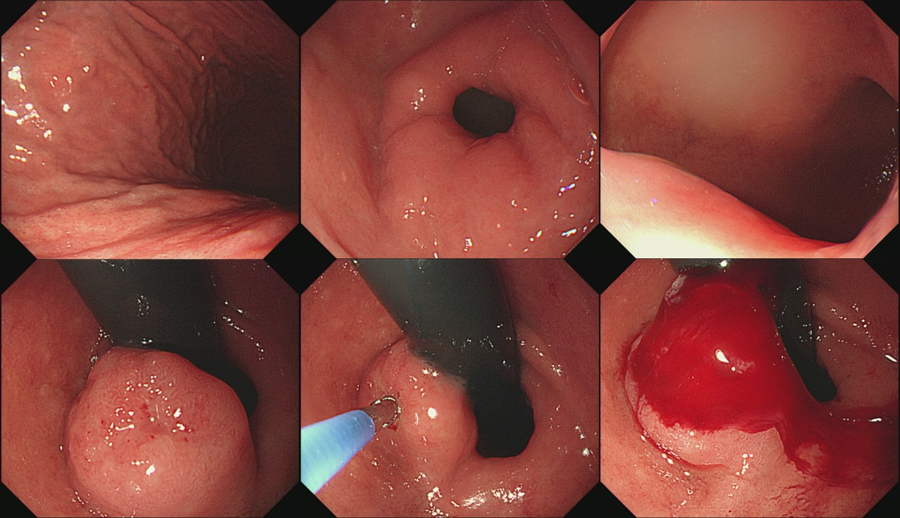
치료 — 크기별 전략 (내시경 vs 수술)
- 매우 작은(2~3 mm) 병변: EMR 시도 후 어려우면 cold biopsy + APC ablation.
- 유두부(pyloric ring/AoV)에 근접·납작: 절제 위험이 너무 높아 소작술로 치료.
- G1, 점막하 침범: EMR/ESD 또는 수술적 wedge resection(함몰형·suspicious tumor emboli는 수술).
- NET G1 0.7~2.5 cm: transduodenal excision(wedge)로 점막하까지 절제, margin 확보.
- Neuroendocrine carcinoma(NEC): carcinoid와 전혀 다른 무서운 병 — 깊고 림프절 전이 흔함, 수술 + 항암.
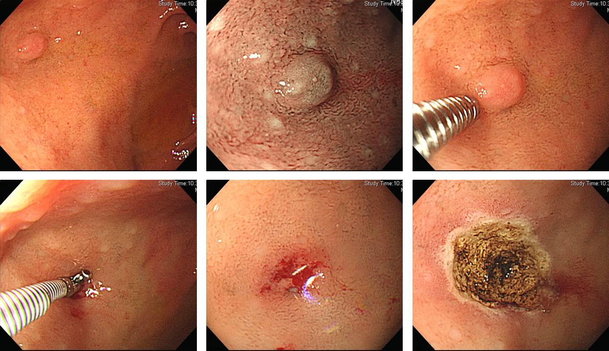
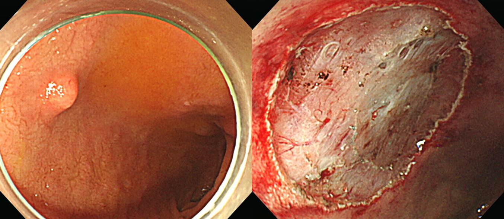
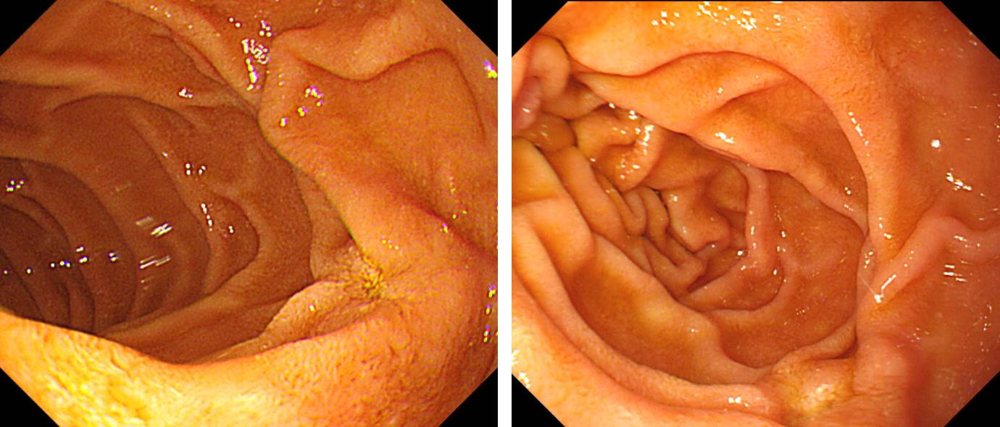
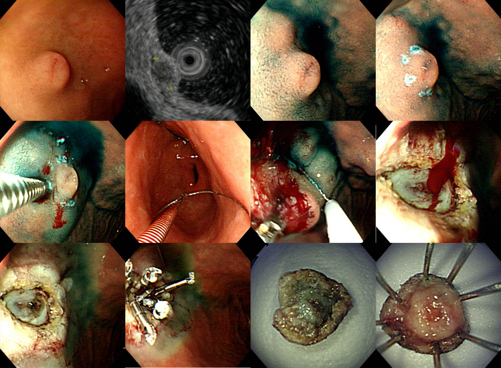
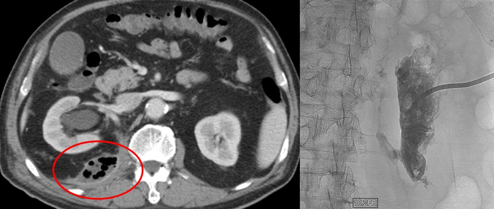
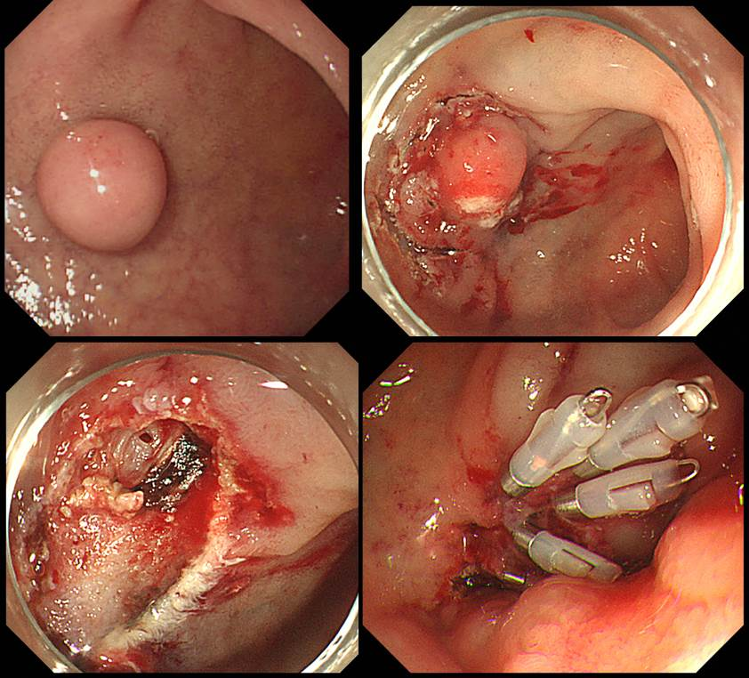
- NET G1: mitosis 0~1/10 HPF, Ki-67 low, synaptophysin 양성.
- NEC: Ki-67 약 10%+, aggressive, LN 전이.
- 느리게 자라는 SMT가 과거 Brunner샘 과형성으로 오진되었다가 incision biopsy에서 NET G1로 진단된 증례도 있다.
- 국소 G1 완전절제 후 → 경과관찰. 절제불가/전이성 NET →
octreotide LAR 30mg IM q4wk또는lanreotide. - NEC(고등급) → 수술 + 전신항암
gemcitabine+cisplatin또는FOLFOX. - UAE(간전이)·PRRT 등 specialized 치료는 다학제 판단.
6. 십이지장 림프종 (Extragastric MALToma 등)
위를 제외한 MALT 림프종은 발생 빈도가 낮고 치료원칙이 정립되어 있지 않다. GI MALT 림프종은 extranodal MALT의 60~70%를 차지하며 위(50~60%)가 가장 흔하고, 소장(약 30%), 대장·직장(6~12%) 순이다. 위에서 follicular lymphoma는 양성 병변으로 다루지만, 십이지장·소장 병변은 악성 림프종의 관점에서 평가한다.
내시경 소견과 진단
- 주유두 부근 또는 D2의 융기·결절·점막 색조변화. 육안으로 adenoma/carcinoid와 감별이 어렵다.
- 조직: lymphoepithelial lesion, CD20(L26) 양성, CD3/CD5/CD10 음성, Ki-67 low → MALToma.
- 병기 설정 위해 CT·EUS·골수검사 등 광범위 평가가 필요하다(다발성·파종성 가능).
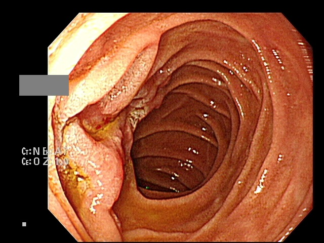
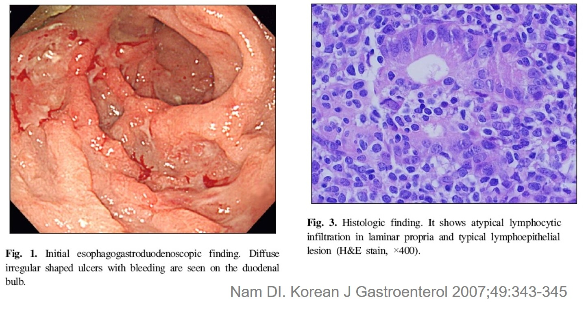
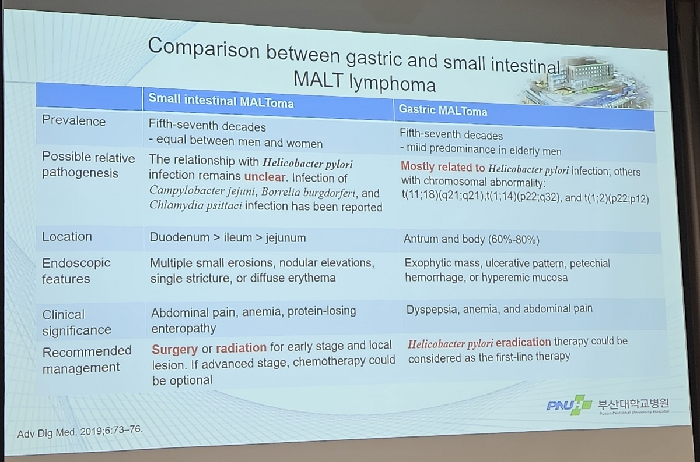
치료
Extragastric MALToma의 치료원칙은 명확하지 않다. 보통 방사선치료(RT)가 추천되지만, 의료진에 따라 CCRT를 하거나 Helicobacter 제균을 추가하기도 한다. 제균만으로 좋아진 증례보고도 있다. 단, DLBCL 성분을 동반하거나 파종성인 경우 예후가 나쁘다.
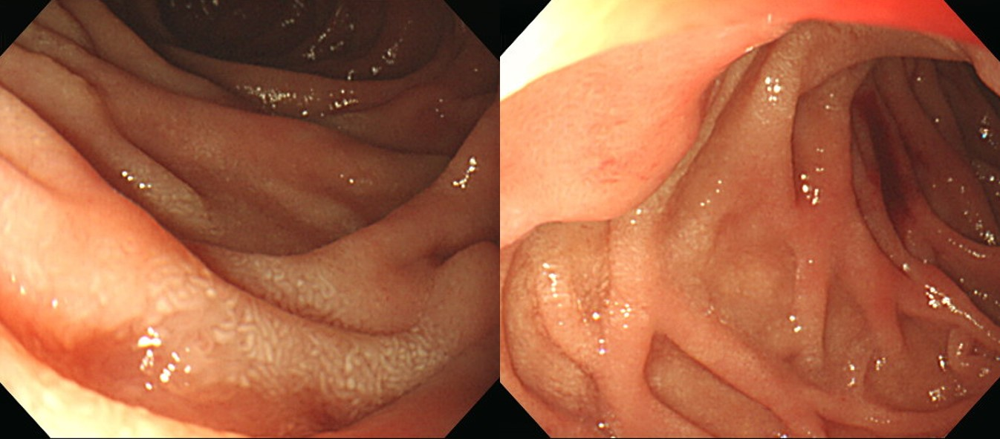
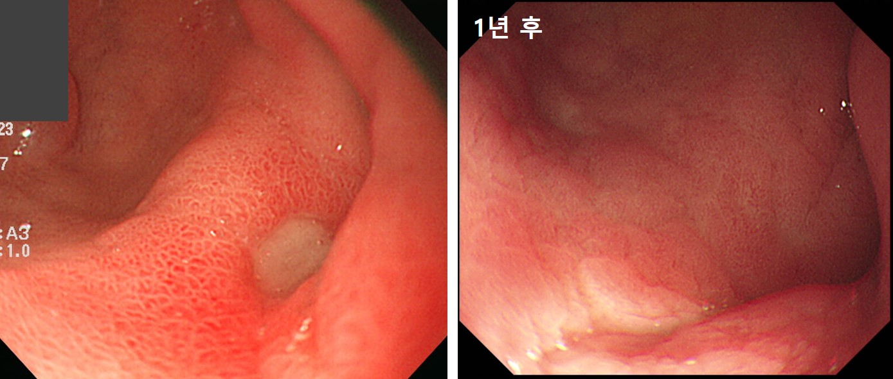
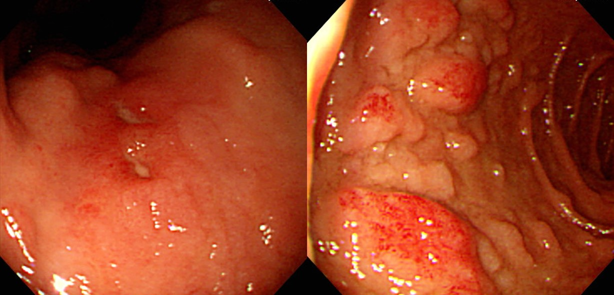
- 위 H. pylori는 colorectal MALT에는 영향이 없을 것으로 추정된다. 소장 MALT는 Campylobacter jejuni, 피부는 Borrelia burgdorferi, 안와는 Chlamydia psittaci와 연관 보고가 있다.
- 직장 MALT는 제균치료 효과가 상당히 좋았다(Kelley SR. Int J Colorectal Dis 2016) — 19예 중 12예 완전관해.
- 국소 MALToma → 방사선치료(RT)가 기본, CCRT 또는 국소 내시경 절제(EMR/ESD)도 선택.
- H. pylori 양성이면 제균:
amox 1g bid pc + clarithro 500mg bid pc + PPI bid pc 14d. - DLBCL 전환·파종성 →
R-CHOP항암.
7. 십이지장 전이암 (Duodenal metastasis)
타장기암의 십이지장 전이는 드물지 않게 마주친다. 육안 소견만으로 원발성 십이지장암과 전이암을 구분하기 어려워, 면역화학염색이 결정적이다. 타장기의 십이지장 침윤은 주로 췌장암·간암·담도암에서 직접 침윤하며, 전이 형태로는 유방암·폐암·구강암·위암 등이 있다.
- 유방암 전이: 토혈로 내원, GATA3 양성으로 진단.
- 설암(tongue cancer) 전이: 점막하 poorly differentiated, p63/p40 양성 → metastatic SCC.
- 폐암 전이: pleomorphic carcinoma.
- 위암 전이: 대개 peritoneal seeding 동반. 인환세포암·Krukenberg 동반. 드물게 점막하 vascular nature로 뿌려진 전이.
- 후복막 육종: 드문 직접 침윤 예.
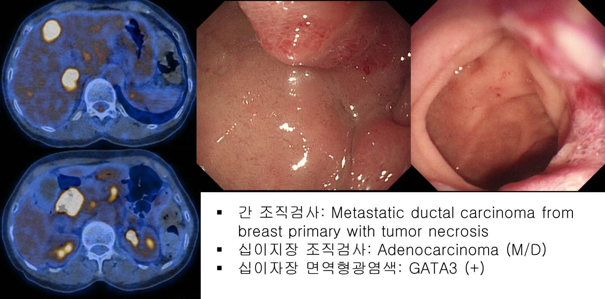
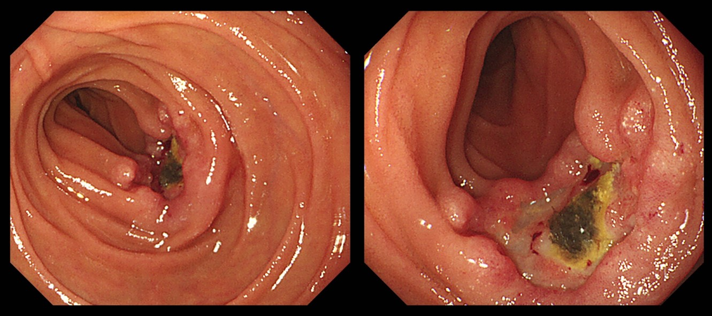
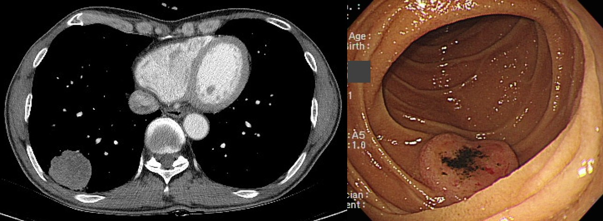
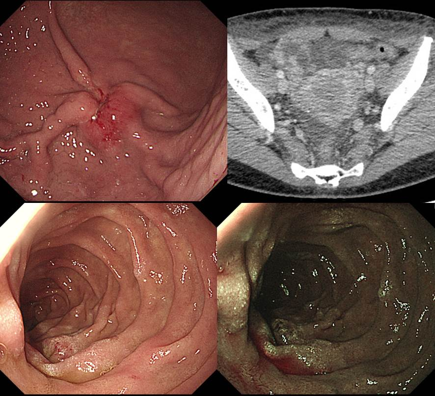
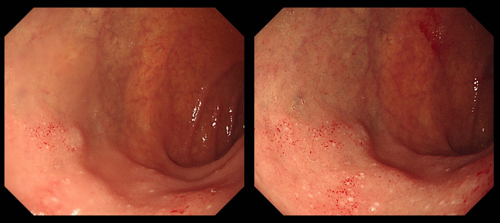
- 원발성과 전이암의 육안 감별은 어렵다. 원발암 병력 + 면역화학(marker)으로 확정한다.
- 점막 병변이 림프절에 눌린 모양이 아니고 뿌려진 모습이면 vascular/lymphatic 전이를 시사한다(위암 증례).
- 전이 진단이 치료방침을 바꾸지 않는 경우도 있으나, 병기·예후 판단에 중요하다.
- 원발암에 준한 전신항암: 대장암 계열
FOLFOX, 담도·췌장 계열gemcitabine+cisplatin. - 출혈·폐쇄 완화 → 내시경 지혈, duodenal stent.
- 위암 파종성 전이 → 전신항암이 기본(국소 치료는 완화 목적).
8. 십이지장 정맥류 (Duodenal varix) — 악성·출혈 감별
간문맥 고혈압 환자에서 드물게 발생하는 이소성 정맥류로, 십이지장 정맥류는 이소성 정맥류의 1/3을 차지한다. 출혈은 드물지만 일단 출혈하면 치명적이다. 간경변·간암(HCC)·간문맥 혈전·Budd-Chiari 증후군과 관련된다. 정맥류가 의심되면 절대 조직검사를 하지 않는다 — 생검 후 출혈이 발생할 수 있다.
- 내시경: D1~D3의 bluish·rugged mass, smooth surface, red spot/nipple sign.
- Nipple sign은 최근 중증 출혈과 양의 상관 → urgent intervention(Am J Gastroenterol 2017).
- duodenal varix afferent는 superior/inferior pancreaticoduodenal vein, efferent는 IVC로 유입.
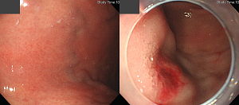
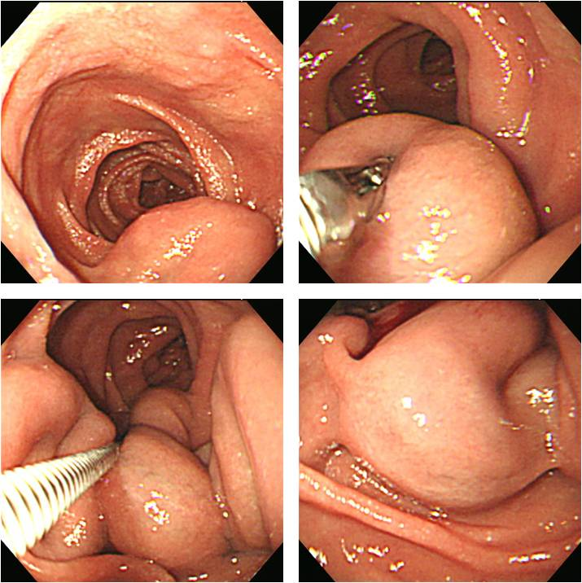
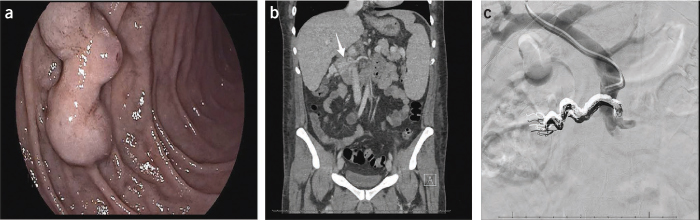
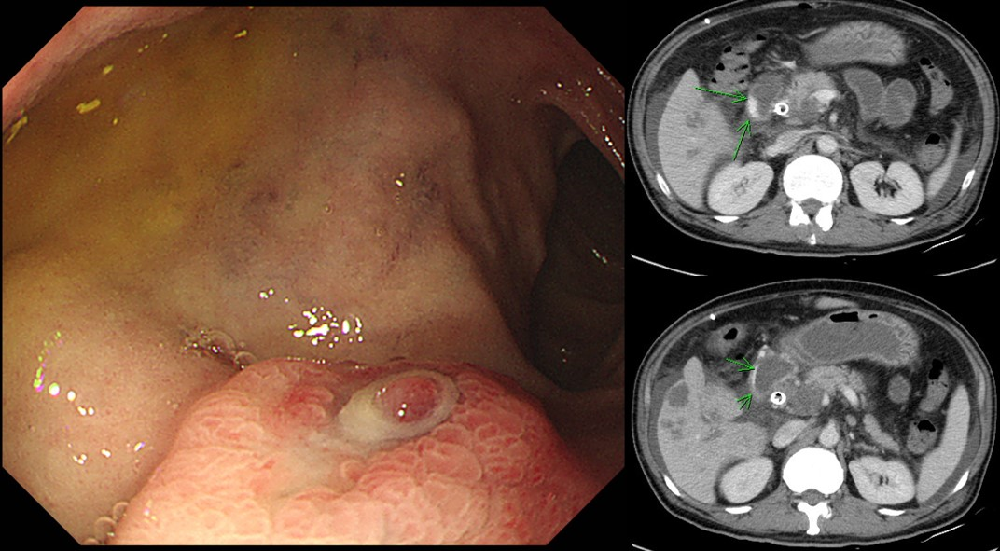
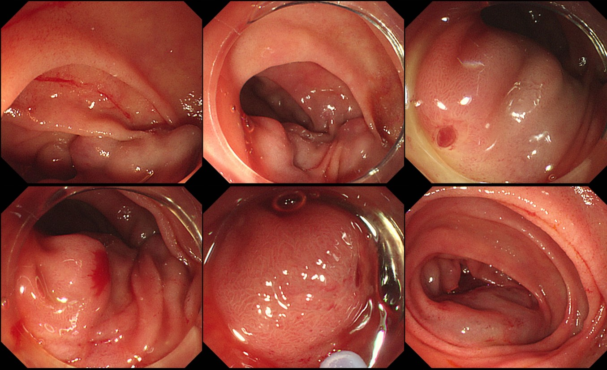
- 내시경적 경화술(histoacryl)·결찰술, TIPS, coil/angiographic embolization. 아직 효율적 치료가 정립되지 않았다.
- 매우 큰 병변은 band ligation으로 완전 폐색이 어렵고, sclerotherapy는 lipiodol 색전 위험 → 혈관중재 색전술이 유효(Intest Res 2017).
- 식도 게실과 달리 십이지장 게실은 벽이 얇고 천공 위험이 커 내시경 치료를 잘 하지 않는다.
- 급성 출혈: 수액·수혈,
octreotide IV또는terlipressin IV, 내시경/혈관중재 지혈. - 재출혈 예방:
propranolol 20-40mg bid po(비선택적 베타차단제), 필요 시 TIPS. - 근본: 간기능·문맥압 관리, HCC 치료.
9. 치료 옵션 종합 (내시경 vs 수술 vs 항암)
십이지장 악성 병변의 치료는 병변 위치·크기·깊이·조직형에 따라 결정된다. 점막에 국한된 조기암·G1 NET·국소 선종은 내시경 절제(또는 소작)로, 점막하 침범·림프절 전이 가능성·큰 병변은 수술로 간다.
- 내시경 절제: EMR(inject & cut, EMR-P), UEMR, 제한적 ESD. 십이지장에서는 천공·출혈 위험이 커 ESD를 일상적으로 하지 않는다.
- 수술: wedge/transduodenal excision(작은 병변), 부분절제, 췌십이지장절제(PPPD/Whipple)(periampullary·진행암).
- 항암: 전이성·절제불가·adjuvant. 선암/담도형
gemcitabine+cisplatin, 대장형FOLFOX.
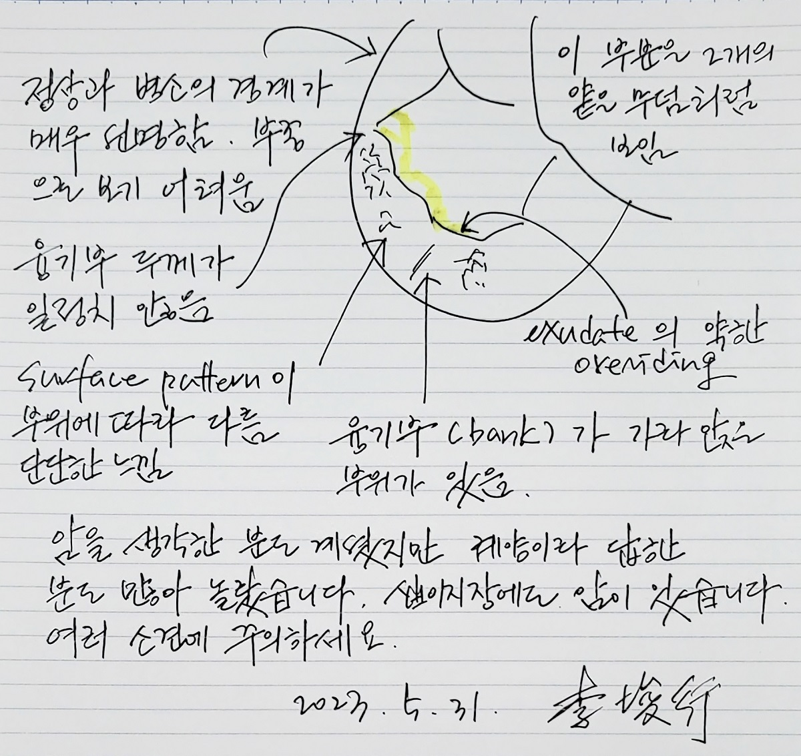
- PPPD/Whipple 후에는 anatomy가 환자마다 다르고 복잡해 해석이 어렵다. bile reflux가 심한 경우도 있다.
- 추적 내시경에서 재발 여부와 문합부를 주의 깊게 관찰한다.
10. 내시경 치료 합병증 — 십이지장 천공
십이지장은 벽이 얇고 공간이 좁아 내시경 절제·소작 중 천공이 위보다 훨씬 잘 생긴다. 상부위장관 치료내시경을 전문으로 하는 의사 중 십이지장 carcinoid EMR로 천공을 경험하지 않은 경우가 드물다.
- 천공 직후 chest X-ray에서 free air가 보이지 않을 수 있다 — 통증이 지속되면 반복 촬영하고 CT를 고려한다.
- 천공 후 담즙·췌액에 의한 염증이 파급되면 수술조차 불가능해지고, 6개월 금식까지 간 증례가 있다.
- 십이지장 선종 내시경 치료 후 출혈·천공이 10~20% 발생하며 대부분 입원기간에 나타난다.
- 대처: 시술 중 즉시 clip, 보존적 치료(금식·항생제·배액), 필요 시 수술. abscess는 PCD로 치료하기도 한다.
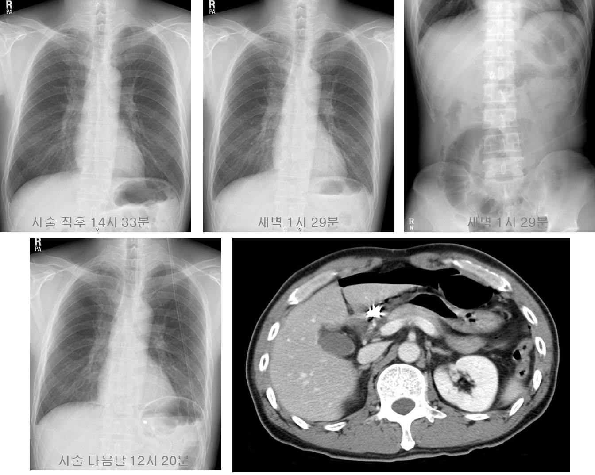
- 보존적:
NPO,ceftriaxone+metronidazole IV등 광범위 항생제, 비위관 감압, 수액. - 내시경적 봉합:
clip, OTS clip, over-the-scope. 실패 시 수술. - 출혈 예방/치료:
PPI IV, epinephrine injection, coagulation.
11. 이미지–소견–치료 정리표
| 질환 | 대표 이미지 | 내시경 소견 | 감별·진단 포인트 | 치료·처방 |
|---|---|---|---|---|
| 십이지장 선암 | 유두 주위 융기·궤양·융합 종괴, lumen encircling 협착. D3·D4는 push enteroscopy 필요. | 궤양저에 비해 부종이 과도·약물에도 증상 지속이면 악성 의심. 첫 검사 놓침 흔함. | PPPD/Whipple 또는 부분·내시경 절제; 전이성 gemcitabine+cisplatin, FOLFOX |
|
| 선종 → 조기암 | 점막에 국한된 융기·함몰 병변, 고도 이형성 선종에서 암 발생. FAP은 다발성. | 조기암은 내시경 완치 가능. Non-lifting이면 소작 전환. FAP은 Spigelman 감시. | EMR inject&cut·UEMR·APC; 진행 시 PD |
|
| 유두부 선종 | 주유두·부유두의 융기·과립상 병변, FAP에서 다발성. | 정면 관찰 어려움 → 측시경·cap. 근처 생검 시 췌장염 주의. HGD/암 의심 시 절제. | endoscopic papillectomy/transduodenal ampullectomy; PPI, 췌장 스텐트 |
|
| 유두부 암(AoV) | 유두부 종괴·궤양, 황달·빈혈로 발견. Non-lifting이면 수술. | IAPN(선종)에서 발생. T1~T4, N 병기. 조직형 대개 adenocarcinoma G2. | PPPD + adjuvant gemcitabine+cisplatin; 황달 시 ERBD/PTBD |
|
| 십이지장 NET(G1) | 구부~D2 작은 무경성·점막하 융기, 황색조, 중심함몰. 일부 retroflection 가능. | G1: Ki-67 low, mitosis 0~1/10HPF, synaptophysin+. 천공 위험 높음. | EMR/ESD/소작 또는 wedge resection; 전이성 octreotide LAR 30mg IM q4wk/lanreotide |
|
| 십이지장 NEC | 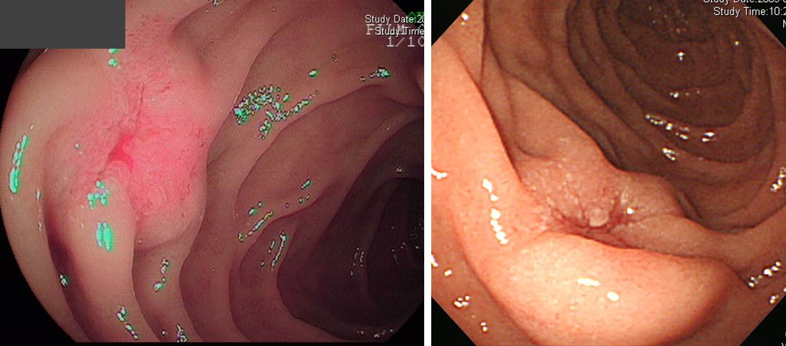 |
carcinoid와 유사해 보이나 깊고 공격적, 림프절 전이 흔함. | Ki-67 약 10%+ → 고등급. carcinoid와 전혀 다른 병. | 수술 + gemcitabine+cisplatin / FOLFOX |
| 십이지장 림프종(MALT) | 주유두 부근·D2의 융기·결절·색조변화, 육안상 adenoma/carcinoid와 유사. | CD20(L26)+, CD3/CD5/CD10−, Ki-67 low. CT·EUS·골수 병기. DLBCL 동반 시 불량. | RT(기본)·CCRT·국소 절제; Hp+ amox 1g bid + clarithro 500mg bid + PPI bid 14d; DLBCL R-CHOP |
|
| 십이지장 전이암 | 원발암과 구분 어려운 융기·궤양. 위암 전이는 seeding 동반. | 면역화학(marker)이 결정적: GATA3(유방), p63/p40(편평), 인환세포(위). | 원발암에 준한 전신항암 FOLFOX/gemcitabine+cisplatin; 완화 stent |
|
| 십이지장 정맥류 | D1~D3의 bluish·rugged mass, red spot/nipple sign. | 간경변·HCC·문맥 혈전. 의심 시 조직검사 금지. Nipple sign = 최근 중증 출혈. | 내시경 경화(histoacryl)·결찰, TIPS, 색전술; octreotide/terlipressin IV, propranolol 20-40mg bid |
|
| 십이지장 천공(합병증) | 절제·소작 중 천공. free air가 늦게/안 보일 수 있음. | 통증 지속 시 반복 촬영·CT. 담즙·췌액 파급 시 치명적. | clip/보존적(NPO+ceftriaxone+metronidazole IV)/PCD/수술 |
연습문제
1. 상부위장관 내시경의 통상 도달 범위이자 "내시경 검사의 범위"로 옳은 것은?
- 식도부터 십이지장 제1부까지
- 식도부터 십이지장 제2부까지
- 식도부터 십이지장 제4부까지
- 위까지
2. 소장에서 위치별 종양 빈도에 대한 설명으로 옳은 것은?
- 십이지장에는 carcinoid가, 회장에는 adenocarcinoma가 많다
- 십이지장에는 adenocarcinoma가, 회장에는 carcinoid가 많다
- 전 구간 모두 lymphoma가 가장 흔하다
- 십이지장에는 종양이 거의 생기지 않는다
3. 십이지장 궤양으로 의뢰된 환자에서 양성 궤양보다 악성을 더 시사하는 소견은?
- 궤양 크기가 작다
- 궤양저에 비해 점막 부종이 과도하고 약물에도 증상이 지속된다
- 단일 병변이다
- 치료 후 통증이 빨리 사라진다
4. 상부위장관 내시경으로 도달이 어려운 십이지장 제3·4부 병변을 찾는 데 도움이 되는 영상 소견은?
- PET CT에서 hypermetabolic mass 내부의 air
- 흉부 X-ray의 free air
- 복부 초음파의 담석
- MRI의 간낭종
5. 십이지장 선종의 내시경 치료에서 Endoscopy 2015 editorial이 강조한 원칙은?
- ESD를 일상적으로 시행한다
- ESD를 일상적으로 하지 말 것
- 항상 수술한다
- 조직검사도 하지 말 것
6. 십이지장 선종 내시경 절제 중 non-lifting sign이 확인되었을 때 적절한 처치는?
- ESD 강행
- 절제를 포기하고 소작술(APC 등)로 전환
- 즉시 천공 유도
- 경구 항생제만 투여
7. 무증상 성인의 검진 내시경에서 유두부(AoV)를 보는 태도로 이준행이 강조한 것은? (O/X)
8. 십이지장 유암종(NET) G1에서 내시경 절제의 두 가지 주요 위험은?
9. 십이지장 carcinoid와 비교하여 neuroendocrine carcinoma(NEC)의 특징으로 가장 옳은 것은?
- carcinoid와 동일한 병이다
- Ki-67이 낮고 예후가 좋다
- 깊고 림프절 전이가 흔한 전혀 다른 공격적 병이다
- 내시경 소작만으로 완치된다
10. 십이지장 정맥류가 의심될 때 가장 먼저 지켜야 할 원칙은?
11. 유방암 환자의 십이지장 전이를 진단한 면역화학염색 표지자는?
12. 십이지장 림프종(MALToma)의 병리·치료에 대한 설명으로 가장 옳은 것은?
- CD20 음성, CD3 양성이다
- 국소 MALToma에서 방사선치료(RT)가 흔히 권장된다
- Helicobacter 제균은 절대 금기다
- DLBCL 성분 동반 시 예후가 더 좋다